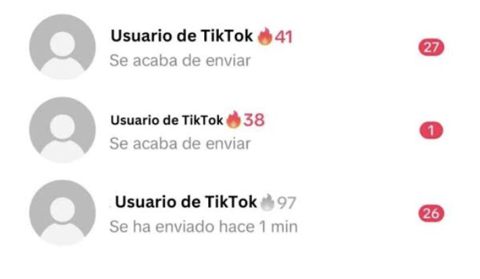

¿Qué es?
Es una plataforma de redes sociales y entretenimiento móvil centrada en la creación, difusión y consumo de videos cortos en formato vertical de pantalla completa.
¿Qué hace?
La función principal de TikTok es el entretenimiento y la expresión creativa a través del contenido audiovisual rápido y accesible. Proporciona un editor integrado con filtros, efectos de realidad aumentada, pistas de audio y plantillas para que cualquier usuario grabe y publique videos rápidamente. Su algoritmo alimenta la sección principal mostrando videos adaptados a los gustos, interacciones y tiempos de visualización de cada persona, informarse mediante micro tutoriales de cocina, moda, leyes o salud, y conectar comunidades globales con intereses afines.
¿A quién va dirigida?
Su base demográfica original y más activa corresponde a la Generación Z y Millennials jóvenes (aproximadamente entre 13 y 28 años), aunque su audiencia se ha ampliado a adultos de todas las edades. El público objetivo abarca desde consumidores pasivos que buscan entretenimiento inmediato, humor, tendencias o microaprendizaje, hasta creadores casuales y profesionales que buscan viralidad orgánica rápida.
¿Cuál es su modelo de negocio?
Opera bajo un modelo de plataforma multifacética monetizado principalmente a través de tres vías:
- Publicidad digital (AdTech): Su principal fuente de ingresos. Venta de anuncios nativos en el feed (In-Feed Ads), formatos de pantalla de inicio (TopView), retos publicitarios (Branded Hashtag Challenges) y filtros corporativos (Branded Effects).
- Comercio electrónico (Social Commerce): Mediante TikTok Shop, la plataforma cobra comisiones por transacciones directas integradas en videos y transmisiones en vivo, además de herramientas de marketing de afiliados para creadores.
- Microtransacciones y propinas virtuales: Venta de paquetes de "monedas virtuales" con las que los usuarios compran regalos digitales durante las transmisiones en vivo (TikTok LIVE). TikTok retiene una comisión fija (que ronda el 50%) antes de liquidar el dinero a los creadores.
Comportamiento que incentiva:
Permanecer consumiendo videos de manera continua.
Cómo está inscrito en el diseño:
Al abrir TikTok, los videos ocupan casi toda la pantalla y se reproducen automáticamente. Para ver el siguiente, solo hay que deslizar hacia arriba, y el feed de “Para ti” no tiene un final visible. Este diseño hace que seguir viendo contenido sea muy fácil y casi automático, mientras que dejar de hacerlo requiere que el usuario tome la decisión de salir o detenerse.
Script implícito:
“No tienes que elegir qué ver ni pensar cuándo parar, solo sigue deslizando y TikTok te mostrará qué viene después.”
Valores que prioriza:
Engagement, continuidad, rapidez y consumo constante versus reflexión y control consciente del tiempo.
¿A quién beneficia?
Beneficia principalmente a TikTok y a los anunciantes, porque mientras más tiempo pasa una persona en la aplicación, más contenido y publicidad puede ver, y más información se obtiene sobre lo que le interesa. La plataforma busca mantener al usuario activo, incluso por sobre su bienestar.
Comportamiento que incentiva:
Orientar la creación de contenido hacia las métricas (vistas, likes, compartidos, comentarios, guardados), generar ansiedad por el rendimiento de las publicaciones, fomentar el trabajo emocional destinado a gestionar la percepción pública.
Cómo está inscrito en el diseño:
En la interfaz de TikTok, los números son públicos y comparables, estos indicadores se actualizan en tiempo real en el costado derecho de la pantalla. Además, el diseño no entrega ninguna opción para que el usuario pueda ocultarlos.
Script implícito:
"Debes competir por validación medible".
“Compite para ser viral”
Valores que prioriza:
Prioriza la competencia por sobre la colaboración. Las métricas en la pantalla no solo miden el valor, sino que lo producen al hacer que ciertas formas de reconocimiento sean inmediatamente visibles y perseguibles por los usuarios (y las marcas, que luego patrocinan y hacen colaboraciones con creadores de contenido).
¿A quién beneficia?
Beneficia a la plataforma de manera directa, al hacer click y dar "me gusta" para alcanzar estas métricas, los usuarios alimentan constantemente el algoritmo. El algoritmo a su vez utiliza estos datos para generar flujos de información de vuelta hacia los usuarios. Esto sostiene el ecosistema de la plataforma capturando la atención del usuario, la cual es el recurso que se monetiza.
Comportamiento que incentiva:
Entrar a TikTok y enviar mensajes y videos de manera frecuente para no perder una racha con otra persona.
Script implícito:
“consume y envía videos todos los días”

Valores que prioriza:
Continuidad, frecuencia, constancia y engagement.
¿A quién beneficia?
Puede beneficiar al usuario porque incentiva la interacción y el contacto con otras personas dentro de la aplicación. Al mismo tiempo, también beneficia a TikTok, ya que estas interacciones generan un motivo adicional para volver a la plataforma y seguir utilizando sus funciones sociales.
¿Qué puede dificultar?
La interacción ya no depende solamente de si el usuario realmente quiere hablar con otra persona, sino que también puede aparecer cierta presión por responder o mantener el contacto solo para no perder el contador.
Script Seleccionado:
“Ver videos sin tener que decidir qué ver”
El diseño actual de TikTok facilita un consumo continuo de contenido mediante la reproducción automática y el desplazamiento vertical. El usuario no necesita definir qué quiere ver ni existe un final visible del feed “Para ti”: basta con deslizar para recibir un nuevo contenido.
Script implícito actual:
“No necesitas decidir qué quieres ver; sigue deslizando y TikTok decidirá qué mostrarte.”
Problema identificado:
Más allá del tiempo que pasamos en la app, el verdadero problema es quién tiene el control. El diseño actual transfiere la decisión de qué consumir directamente al algoritmo. Seguir viendo videos no cuesta nada, es automático, sin embargo, detenerse o elegir qué ver requiere un esfuerzo extra que va en contra del diseño natural de la app. Al final, el usuario participa en el consumo, pero no necesariamente en la dirección que toma ese consumo.
Estructura de interacciones entre personas, tecnología y economía de la atención que sostiene el funcionamiento de la plataforma.
¿Qué valor cambiar?
TikTok actualmente prioriza:
CONTINUIDAD + ENGAGEMENT
La plataforma facilita que el usuario permanezca dentro de un flujo constante, pasivo e ininterrumpido de recomendaciones.
El rediseño prioriza:
AUTONOMÍA + INTENCIONALIDAD
En vez de preguntarle únicamente al usuario si quiere continuar, le damos la posibilidad de decidir cómo quiere continuar.
* No se busca impedir el consumo, sino devolverle al usuario parte de la capacidad de orientar ese consumo.
Propuesta y Wireframes
MOMENTO 1 — PAUSA
Después de una cantidad determinada de minutos (15-20 minutos), el scroll infinito se bloquea y aparece una pantalla de pausa.
MOMENTO 2 — TÚ DECIDES QUÉ VER
Si el usuario selecciona "Seguir viendo", no vuelve inmediatamente al algoritmo anterior. Pasa a una segunda pantalla donde debe introducir una intención activa.
Wireframes: Pantallas de Pausa e Interacción
¿Qué cambia en el sistema?
Esta propuesta introduce un cambio en la relación entre el usuario y el algoritmo. El usuario deja de ser un emisor pasivo de datos de comportamiento y pasa a introducir información explícita sobre lo que desea.
FLUJO ACTUAL:
Usuario ➔ consume contenido ➔ interactúa ➔ ALGORITMO ➔ predice intereses ➔ recomienda ➔ Usuario.
(El algoritmo tiene el rol protagónico en decidir qué aparece).
FLUJO PROPUESTO:
Usuario ➔ consume ➔ PAUSA ➔ declara intención explícita ➔ ALGORITMO ➔ interpreta la intención ➔ adapta recomendaciones ➔ Usuario.
(El usuario interviene directamente en la dirección del sistema).
¿Qué se gana?
- Autonomía: El usuario puede intervenir y modificar directamente la dirección de su feed en tiempo real.
- Intencionalidad: La continuidad deja de ser completamente automática: antes de seguir consumiendo, el usuario debe definir qué quiere encontrar, lo que rompe el "zombie scrolling".
- Control: El algoritmo deja de ser el único actor encargado de determinar qué contenido se presenta a continuación.
- Transparencia: La interacción hace visible que las recomendaciones son una construcción del sistema tecnológico y que, como tal, pueden ser moldeadas y modificadas a partir de una intención humana explícita.
¿Qué se pierde?
- Fluidez y "Seamlessness": El consumo deja de ser completamente inmediato. Al aparecer una instancia de pausa y escritura, se requiere fricción cognitiva y motora.
- Engagement: Al introducir una interrupción, algunos usuarios abandonarán la aplicación en lugar de continuar. Las métricas de tiempo en pantalla de la plataforma bajarán.
- Capacidad de sorpresa algorítmica: Al orientar explícitamente el contenido (ej. "quiero ver recetas"), se reduce parcialmente la lógica del algoritmo de hacer descubrir al usuario cosas que no sabía que quería ver (espontaneidad accidental).